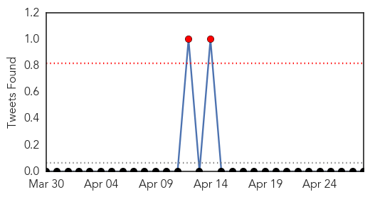
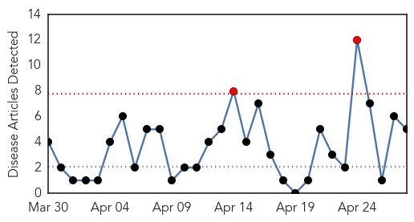
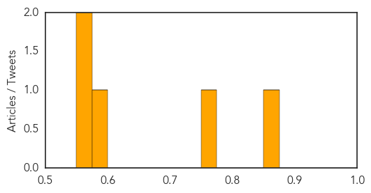

Influenza
30-Day Web Trend
2 alerts, 0 warnings

30-Day Twitter Trend
1 alerts, 0 warnings

Article Locations

Article Confidences

Top Articles:
- 0.998
- Brutal SD flu season winds down
- 0.997
- Bird flu is back US as 7.3 million birds infected
- 0.997
- Antiviral medication offered to farm workers as bird flu spreads
- 0.973
- Bird Flu vaccine offered to farmers as a measure of precaution – Person to person transfer rare
- 0.948
- La. poultry producers keep wary eye on bird flu
- 0.944
- CDC eyeing bird flu vaccine for humans, though risk is low
- 0.936
- New London-Area Farms, Poultry Owners Urged to Monitor Birds...
- 0.934
- Poultry workers offered bird flu vaccine, but turn it down
- 0.890
- New bird flu cases likely in Iowa, millions of birds affected:
- 0.888
- Thurston leads the charge to tackle flu
- 0.878
- Avian flu hits more farms in Iowa, Minnesota
- 0.876
- Poultry owners advised to monitor birds for signs of avian flu after massive outbreak
- 0.857
- Farmers offered bird flu vaccine
- 0.856
- U.S. Bird Flu Outbreak Spreads to Millions of Iowa’s Egg Hens
- 0.786
- Bird flu suspected at 5 more Iowa facilities
- 0.784
- New Iowa Cases of Bird Flu, 6 Million Poultry Affected
- 0.756
- 2nd Bucktown Dog Dead Likely from Flu, Pets Slowly Return to Parks
- 0.751
- April 27, 2015 Archives
- 0.683
- KTTC Rochester, Austin, Mason City News, Weather and Sports
- 0.654
- News, sports, business, jobs - Minot Daily News
- 0.637
- Seventh bird flu case reported in state
- 0.570
- Avian flu outbreak could force costly changes on farms
- 0.513
- Bird flu cases in the state go up quickly as more tests come in
Top Tweets:
-
No tweets found for Apr 28, 2015
Hepatitis
30-Day Web Trend
2 alerts, 0 warnings

30-Day Twitter Trend
0 alerts, 0 warnings

Article Locations

Article Confidences
Top Articles:
- 0.854
- Prevention efforts, new drugs offer hope for an end to hepatitis
- 0.768
- Indiana has 'one of the worst' HIV outbreaks
- 0.582
- HIV & AIDS Information :: New EASL guidelines prioritise interferon-free hepatitis C treatment
- 0.575
- Pregnant Hong Kong women show no significant drop in hepatitis B prevalence rate despite vaccinations, study finds
- 0.563
- ‘1,000 kids die daily due to non-provision of vaccines’
Top Tweets:
-
No tweets found for Apr 28, 2015